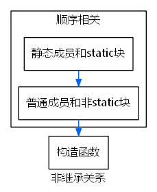
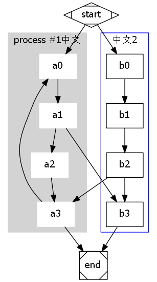

Table of Contents
- common
- 2018
- GTD
- 工作目录划分
- 日常,实用技能
- emacs
- org-mode
- python
- 编码
- 统一调整字幕文件的时间轴
- jupyter-notebook
- Git
- Java
- maven
- SQL
- Photoshop
- Linux
- graphviz
- nginx
- js
- css
- 正则 regex
- GTD
- emacs 常用
- org mode
- 开头，1个是一级标题，2个是二级标题
- spacemacs
- 2019
#options: ^:nil \n:true
common
public内容，放到个人网站。
2018
2018.5之后整理内容
GTD
工作目录划分
spring boot学习目录
e:/works/springboot/
日常,实用技能
禁止windows更新
计算机\HKEY_LOCAL_MACHINE\SOFTWARE\Policies\Microsoft\Windows\WindowsUpdate ExcludeWUDriversInQualityUpdate 1
远程连接Oracle修复
放心执行该注册表文件： 注册表文件
mklink 符号链接 软链接
目标：d:\deploy\下创建index.html文件，指向e:\git\site\fie-toolkit-qnui.html 结果，目的达成。修改index.html,即修改fie-toolkit-qnui.html
d:\deploy> mklink index.html e:\git\site\fie-toolkit-qnui.html
如果是文件夹的话，
mklink /j site e:\git\site
删除符号链接 rmdir .spacemacs
端口占用
netstat -ano|findstr "9100"
C:\Users\Administrator>netstat -ano|findstr "9100" TCP 0.0.0.0:9100 0.0.0.0:0 LISTENING 8308 TCP [::]:9100 [::]:0 LISTENING 8308
tasklist|findstr "8308"
C:\Users\Administrator>tasklist|findstr "8308" javaw.exe 8308 Console 1 535,052 K
taskkill /f /t /im javaw.exe
C:\Users\Administrator>taskkill /f /t /im javaw.exe 成功: 已终止 PID 8308 (属于 PID 25224 子进程)的进程。
eclipse 自动代码设置@author
方法二: 修改Eclipse代码模板 通过菜单 Window->Preference -> Java -> Code Style -> Code Templates 在右侧选择Comments,将其中的Types项，然后选右边的"Edit"，进入编辑模式，将 @author \({user} 中的\){user}改成你自己的名字即可
方法一：修改Eclipse 启动参数 在Eclipse启动时加入启动参数或在eclipse.ini中 -vmargs 后面增加参数 -Duser.name=author
emacs
org-mode
用好Org-mode做Getting Things Done
快捷键
M-RET 插入同级标题 M-S-RET 插入同级TODO标题 M-LEFT/RIGHT 将当前标题升降级 M-S-LEFT/RIGHT 将子树升降级 M-S-UP/DOWN 将子树上下移 C-c * 将本行设为标题/正文
python
常见问题
1.中文乱码： print u'中文' 或者 str.decode('utf-8') 2.遍历对象属性
def __str__(self): sb=[] for key in self.__dict__: sb.append("{key}='{value}'".format(key=key,value=self.__dict__[key])) return ', '.join(sb).decode('UTF-8')
编码
内存中统一使用Unicode，保存至硬盘或传输时使用UTF-8 python早期使用ASCII,现支持Unicode编码，用u'中文'表示。 Unicode转化为其他编码，用u'中文'.encode('utf-8') UTF-8表示的字符串'xxx'转化为Unicode用 'xxx'.decode('utf-8')
统一调整字幕文件的时间轴
# encoding: UTF-8 """ [00:03.31]作词：daniwell 修改字幕文件时间轴 """ import sys # 处理文件读取中文编码 try: # Python 2 reload(sys) sys.setdefaultencoding('utf8') except NameError: # Python 3 pass import re pattern = re.compile(r'\[(\d+)\:(\d+)\.(\d+)\](.*)') def proc(file,rep,newFile): p = re.compile(r'(.*?)(\d+)\:(\d+)\.(\d+)') pm = p.match(rep) p1=pm.group(1) p2=int(pm.group(2)) p3=int(pm.group(3)) p4=int(pm.group(4)) print(p1,p2,p3,p4) lines = [] with open(file,'r') as f: l = f.readlines() for line in l: print(line) m = pattern.match(line) if m!=None: min=int(m.group(1)) a = int(m.group(2)) b = int(m.group(3)) o = m.group(4) if(p1=='-'): if(b-p4<0): b=100+b-p4 a=a-1 if a<0: a=a+100 min = min-1 else: b=b-p4 if(a-p3<0): a=100+a-p3 min = min-1 else: a=a-p3 min = min - p2 pass # 减速 else: # 加速 print(type(m)) if((p4+b)>100): b=(p4+b)%100 a=a+1 else: b=(p4+b) if(p3+a>100): a=(p3+a)%100 min=min+1 else: a=p3+a min = min + p2 new = "[%s:%s.%s]%s\n" % (str(min).rjust(2,'0'),str(a).rjust(2,'0'),str(b).rjust(2,'0'),o) lines.append(new) else: lines.append(line) print(lines) with open(newFile,'w') as f: f.writelines(lines) if __name__ == '__main__': rep = "-00:04.00" proc("e:/b.lrc",rep,"e:/c.lrc")
jupyter-notebook
执行:
jupyter notebook –generate-config 配置文件位置:
C:\Users\Administrator\AppData\Roaming\.jupyter\jupyter_notebook_config.py 搜索# c.NotebookApp.notebook_dir = u'' 修改为
c.NotebookApp.notebook_dir = u'E:\Dropbox\jupyter-notebook'
#import os #os.system('jupyter nbconvert –to html jupyter notebook.ipynb') import subprocess import locale code = locale.getdefaultlocale() print(u"编码:%s,encode不支持zh_CN" % str(code)) cmd = ["jupyter","nbconvert","–to","html",u"jupyter notebook学习.ipynb".encode('cp936')] ps = subprocess.Popen(cmd) #ps.wait() 编码:('zh_CN', 'cp936'),encode不支持zh_CN
s="\u767b\u5f55\u6210\u529f" print(s.decode("unicode-escape")) print(s.encode("cp936")) print(s.decode("gb2312")) 登录成功 \u767b\u5f55\u6210\u529f \u767b\u5f55\u6210\u529f mvn install:install-file -Dfile=./lib/taobao-sdk-java-auto.jar -DpomFile=pom.xml
taobao_sdk taobao_sdk 1.1.1 插入图片,按一下回车，在查看模式下才显示图片。
Git
HTTP Basic: Access denied fatal: Authentication failed
git config –system –unset credential.helper 然后再git pull，就提示输入用户名密码了
^M是windows下换行\r\n的\r
建议使用LF作为换行符，而非winsdows下CRLF。 在linux中，可以使用cat -v 来查看不可见字符。
用到\r\n的场景！
HTTP规范里，可是要求换行都用\r\n的，也就是header之间用\r\n，header和body之间两个\r\n。当然很多web server是会做兼容的，但遇到严格遵守规范的程序，你想< request.txt telnet xxxx 80这么玩就不行了。 所以core.autocrlf使用false.
git 配置
打开全局配置文件
git config --global -e
[user] [filter "lfs"] clean = git-lfs clean -- %f smudge = git-lfs smudge -- %f required = true [diff "gpg"] textconv = gpg --decrypt [gui] encoding = utf-8 [core] editor = "code --wait" [alias] lg = log --color --graph --pretty=format:'%>|(20)%C(yellow)%h%Creset%C(yellow)\t%d%Creset%ad\t%C(bold yellow)<%an>%>|(55)%Creset%>|(60)%s' --date=format:'%Y.%m.%d %H:%M:%S' --abbrev-commit [diff] tool = tortoisediff [difftool] prompt = false [merge] tool = tortoisemerge [mergetool] prompt = false keepBackup = false [difftool "tortoisediff"] cmd = \""D:/Program Files/TortoiseGIT/bin/TortoiseGitMerge.exe"\" -mine "$REMOTE" -base "$LOCAL" [mergetool "tortoisemerge"] cmd = \""D:/Program Files/TortoiseGIT/bin/TortoiseGitMerge.exe"\" -base "$BASE" -theirs "$REMOTE" -mine "$LOCAL" -merged "$MERGED"
git版本管理实践内容
查看远程库
git remote -v
删除远程库
git remote rm origin git remote rm upstream
重新建立远程库
git remote add origin https://github.com/xx/xx.git
强制用远程分支覆盖本地分支
git fetch git reset –hard origin/master
已经存在repository中的文件，本地修改不提交
git update-index –assume-unchanged examples/VnTrader/XSPEED_connect.json
查看已经加入在repository中但不提交的文件
git ls-files -v | grep -e "^[hsmrck]"
恢复git跟踪
git update-index –assume-unchanged filename
合并2次提交
1.执行
git rebase -i HEAD~2
会出现： 编辑窗口，按提交先后顺序从上到下列出最近2次提交。 最上面一行保留，将下面的pick改成s或squash,即（# s, squash = use commit, but meld into previous commit）。 保存，关闭，会出现第二个编辑窗口，此时如果忽略掉注释内容，是2次提交的commit，编辑该内容后保存退出即可。 如果中间出错，git rebase –abort，退出此次rebase。
git fetch 后查看log日志
1.git fetch origin dev 2.以下两命令结果一样 git log origin/dev ^myDev git log myDev..origin/dev
修改最后一次提交记录
git commit –amend
修改某次的提交记录
git rebase COMMIT-ID^ –interactive 选择要修改的（即第一条，将pick改为r),保存，关闭编辑器，弹出第二个编辑内容，修改为新的commit内容。保存退出。
使用git rebase的一般情况：
如果是对local 私有的临时性质的分支，则直接git rebase -i master(梳理历史信息比如合并成一个commit)+git merge产生一个fast forward,最终以一个commit展示在master分支上； (dev分支执行git rebase -i master.然后git checkout master,git merge dev)
不能使用git rebase 而应该使用git merge –no-ff的情况
如果是一个特别活动的跟踪，比如feature分支，bugfix分支那么永远不要使用rebase,而是git merge –no-ff，这样该分支历史永远存续在主分支上； （dev分支执行git merge master –no-ff,解决冲突后commit，然后git checkout master,git merge dev）
git lg -5 最近5条记录
git rebase
- 意义
变基，master分支切换到dev分支，后来master分支又有提交，你的dev就变old了，变基就是把你在dev上的提交，从最新的master上再重演一遍.变更的是dev分支，dev分支从旁支变为超前master分支的结果. rebase结束后，master 分支上执行git merge dev,可以直接fast-forward. 主要作用就是让历史提交记录好看，没有“真正的merge”,commit tree不会出现交叉点。
- 基本命令
git rebase basebranch #在topicbranch分支上执行该命令， git rebase basebranch topicbranch #在basebranch分支上执行该命令，相比上面一条，省却了切换到topicbranch,再执行上面一条命令
1.如果有冲突，解决冲突后，执行 git add conflict-file(如 git add .)，将解决后的冲突文件加入stage（暂存区）,继续执行 git rebase –continue,直至最终成功自动回到topicbranch分支。
- 黄金定律
绝不要在公共的分支上使用它。
比如说，如果你把 master 分支 rebase 到你的 feature 分支上，【git checkout master, git rebase feature】,这次 rebase 将 master 分支上的所有提交都移到了 feature 分支后面。问题是它只发生在你的代码仓库中，其他所有的开发者还在原来的 master 上工作。
- 参数
1.git rebase –onto master server client #取出client分支，找出处于client分支和server分支的共同祖先之后的修改，然后在master分支上重放一遍。 2.-p, –preserve-merges，我的理解：出现的场景是： 1.dev与future分支有过一次merge（非fast-forward). 2.此时把dev变基到master，如果不加-p，dev与future分支的merge在树形图上就看不出来分叉，而我们希望保留这个merge记录，则需要加-p。最常见的场景，是执行pull操作的时候git pull –rebase=preverse。 而我的应用场景：将git pull拆分成git fetch origin master，git rebase -p origin/master 引用原文： Recreate merge commits instead of flattening the history by replaying commits a merge commit introduces. Merge conflict resolutions or manual amendments to merge commits are not preserved. 在dev上执行git rebase master 或者在master分支上执行git rebase master dev, 效果应该一致，最终都停留在dev分支.
- git rebase用来修改提交历史或合并本地提交记录
如合并2次提交： 1.执行
git rebase -i HEAD~2
会出现： 编辑窗口，按提交先后顺序从上到下列出最近2次提交。 最上面一行保留，将下面的pick改成s或squash,即（# s, squash = use commit, but meld into previous commit）。 保存，关闭，会出现第二个编辑窗口，此时如果忽略掉注释内容，是2次提交的commit，编辑该内容后保存退出即可。 如果中间出错，git rebase –abort，退出此次rebase。
git add 与 git commit 合并
git commit -am 'commit msg' 所有内容都会commit
行尾追加内容
echo msg >> b.txt
内容不变执行commit
git commit –allow-empty -m "initial empty commit"
github
更新fork:
1.git remote add upstream git@...git #upstream随便取 2.git fetch upstream 3.git merge upstream/master
3.提交分支: git push –set-upstream origin dev 4.更新fork的dev分支:
git fetch upstream git checkout dev #不需要提前git checkout -b dev git merge upstream/dev
本地库与自动生成README.md的远程库关联
1.git remote add origin https://github.com/username/repository.git 2.把README.md pull下来，避免提示refusing to merge unrelated histories git pull –allow-unrelated-histories 3.git push -u origin master #推送，并将本地与远程master分支关联。
Java
Long.getLong("12")==null
Date 30天后
Date now = new Date(); //wrong! Date date = new Date(now.getTime() + 30 * 24 * 60 * 60 * 1000L);
遍历map String.format
java.util.Iterator<String> it = params.keySet().iterator(); while (it.hasNext()) { String key = it.next(); Object o = params.get(key); if (o.getClass().getSimpleName().equals("Date")) { o = sdf.format(o); } key = String.format("%-20s", key); log.info("pw param: " + key + " " + o); }
JREBEL热部署:
https://blog.kuoruan.com/62.html Crack: 1.使用授权服务器：Help > JRebel Activation > I already have a license > Connect to License Server Group URL 填写：http://idea.lanyus.com/{username} (用任意用户名替换 {username})，Email 随意。 jrebel configuration> advanced>jrebel agent: jrebel 6 agent 6.4.8.
tomcat
设置上下文,去掉项目名XXXWeb.
<Host name="localhost" appBase="webapps" unpackWARs="true" autoDeploy="true">
<!-- SingleSignOn valve, share authentication between web applications
Documentation at: /docs/config/valve.html -->
<!--
<Valve className="org.apache.catalina.authenticator.SingleSignOn" />
-->
<!-- Access log processes all example.
Documentation at: /docs/config/valve.html
Note: The pattern used is equivalent to using pattern="common" -->
<Valve className="org.apache.catalina.valves.AccessLogValve" directory="logs" prefix="localhost_access_log." suffix=".txt" pattern="%h %l %u %t "%r" %s %b" /> wrong:
<Context path="/" docBase="D:/deploy/xxx" debug="0" reloadable="false" crossContext="true" /> right:
<Context crossContext="true" debug="0" docBase="XXXWeb" path="/" reloadable="false" /> 或者
<Context crossContext="true" debug="0" docBase="jinpaifenxiao_server" path="/" reloadable="false" />
</Host>
</Engine>
</Service>
</Server>
默认80端口
同时部署两个项目
在myeclipse中部署即可。 只需要修改上面的上下文：docBase,指向其中一个项目名，就可以不带项目名访问该项目。 另一个项目，加上项目名即可正常访问。
修改tomcat项目目录&同时部署多个项目
1.tomcat/conf/server.xml <Host appBase 由默认的"webapps"修改为项目地址,如"e:/deploy" <Context path="/" docBase="qianniu_goldd_supplier",用来配置默认项目,不用项目名即可访问. 其他项目访问,加上项目名称即可(deplay下文件夹名称) 同时注意,e:/deploy下无用的项目(符合web app特性的),放在新建的文件夹,否则也会被部署,配置等可能过时出错(如以前备份的数据库连接配置无效,导致tomcat启动失败.)
Date SimpleDateFormat
String start = "2018-07-26 10:00:00"; String status = "WAIT_SELLER_SEND_GOODS"; SimpleDateFormat sdf = new SimpleDateFormat("yyyy-MM-dd HH:mm:ss"); Date ds, de; Date now = new Date(); while (true) { if (endDate == null) { ds = sdf.parse(start); } else { ds = endDate; } de = new DateTime(ds).plusSeconds(20).toDate(); if (de.after(now)) { de = now; } endDate = de; log.info("pw start: " + sdf.format(ds) + " end: " + sdf.format(de));
30天后不能用
错误：
Date refreshExpiredDate = new Date(now.getTime() + 30 * 24 * 60 * 60 * 1000);
正确的做法：
Date refreshExpiredDate = new Date(new DateTime(now.getTime()).plusDays(30).getMillis());
JPA
LIKE
String qlString = "select mo.mergeTid from TradeInfo mo where mo.tradeId in "
- "(select model.tradeId from TradeInfo model where model.isMerge=:isMerge and model.mergeTid like :tradeId";
if(tid!=null) {
qlString =" and model.tid like '%"+tid"%'";//正确代码，非删除，org导致
//或者
//qlString =" and model.tid like %"+tid"%";//错误代码！
}
qlString +=")";
log.info("pw===================findByTradeId"+tid+tradeId+qlString);
Query query = this.entityManager.createQuery(qlString);
query.setParameter("tradeId", "%"tradeId"%");
query.setParameter("isMerge",Long.valueOf(TradeConstant.TRADE_ISMERGE_merge_parent));
同时，可以
query.setParameter("tradeId", "%"tradeId"%");
但是不能够
query.setParameter("tradeId", tradeId);
因为tradeId是Long类型，应该是String
delete 错误
public TradeInfo findByCompIdAndTid(Long compId, String tid) {
try {
TradeInfo ti = tradeInfoRepository.findByCompIdAndTid(compId, tid);
return ti;
}catch(Exception e) {
//pw 临时处理办法
if (e.getCause() instanceof NonUniqueResultException) {
List<TradeInfo>ts = tradeInfoRepository.findAllByCompIdAndTid(compId, tid);
for(int i=ts.size()-1;i>0;i–) {
delete(ts.get(i));
}
log.error(">pw findByCompIdAndTid return multiple,deleted. compId:"compId" tid:"+tid);
return ts.get(0);
}
return null;
}
}
并发
Spring Boot
Common
- 启动运行
1。利用maven
./mvnw spring-boot:run
如果已经安装Maven，直接
mvn spring-boot:run
2。
mvn clean package #生成jar包 java -jar target/gs-uploading-files-0.1.0.jar #生成的jar包路径
- html template
- DONE 启动热部署
```` 1.pom.xml启动热部署 <dependency> <groupId>org.springframework.boot</groupId> <artifactId>spring-boot-devtools</artifactId> <optional>true</optional> </dependency> 2.File>setting>Build,Execution,Deployment>Compiler,右侧选中"build project automatically" 3.File>setting>搜索registry，在keymap对应下有个"registry…",有三个点，双击，绑定Ctrl+Shift+A,一路确定。 4.回到编辑器，按住Ctrl+Shift+a，找到勾选compiler.automake.allow.when.app.runnin ````
- Jrebel IDEA 实现热部署
TODO Spring Boot官方教程逐步学习计划
文档：Spring Boot Reference Guide,II,Getting Started开始 start.spring.io自动生成配置项目 学习目录 原则：完全按照文档中，不考虑实际使用情况 宗旨：正常运行，达到文档所示结果，快速体会完所有功能
- 解决打包太大问题
普通spring boot打包后基本都在50M-90M,测试项目90M,去除所有依赖后测试项目只有350k.可以快速上传服务器部署，测试可以正常启动。
基本思想：
将所有依赖jar拿出单独放在一个目录，打包的jar去除这些依赖，运行时指定依赖jar所在目录。 1.导出项目所有依赖包，默认导出目录为 target\dependency ，拷贝至部署服务器不动即可。（下面步骤打包时会被删除）
mvn dependency:copy-dependencies 2.查看项目依赖
mvn dependency:tree 得到类似下面结果：每行：之前的即使需要的groupId，获得所有groupId后去重排序即可：
得到类似下面的结果： 获取groupId与artifactId：正则替换：
.*?- (.*?):(.*?):.* 替换为
<exclude><groupId>$1</groupId><artifactId>$2</artifactId></exclude>
复制，使用正则替换：.*?- (.*?):.* 替换为 $1,
image.png
image.png
3.修改pom文件
<build> <plugins> <plugin> <groupId>org.springframework.boot</groupId> <artifactId>spring-boot-maven-plugin</artifactId> <configuration> <layout>ZIP</layout> <excludeGroupIds> <!– 将所有groupId以,分割放在这 –> <!– ！重要更新 废弃此excludeGroupIds，建议使用下面excludes –> </excludeGroupIds> <excludes> <exclude> <groupId>org.springframework.cloud</groupId> <artifactId>spring-cloud-starter-feign</artifactId> </exclude> <exclude> <groupId>org.springframework.cloud</groupId> <artifactId>spring-cloud-starter-feign</artifactId> </exclude> <!– 类似其他 –> </excludes> 4.打包
mvn clean package 5.运行jar时指定dependency目录，如：
java -Dloader.path="../target-20180726/dependency" -jar project.jar
- 7zip 生成tar压缩包，linux下解压
tar -xf dependency.tar
- 前提
java 1.8, java -version maven , mvn -v
- maven 设置repository位置与mirror
配置文件： apache-maven-3.5.2/setting.xml
<localRepository>e:/.it/.m2/repository</localRepository>
<mirrors>下添加阿里代理：
<mirror> <id>alimaven</id> <name>aliyun maven</name> <url>http://maven.aliyun.com/nexus/content/groups/public/</url> <!--<mirrorOf>central</mirrorOf> --> <mirrorOf>*</mirrorOf> </mirror>
注意：如果运行简单的s11都出错，阿里也没有该库，临时删除该mirror，重新执行即可。 注意：可能出现 Missing artifact ，删除该即可。
- 11.1 Creating the POM
步骤： 创建目录s11, 创建pom.xml文件, 执行 mvn deployment:tree 或 mvn package 运行：mvn spring-boot:run，如果出错，见设置阿里代理注意事项。
- 16 Auto-configuration
- You need to opt-in to auto-configuration by adding the @EnableAutoConfiguration or @SpringBootApplication annotations to one of your @Configuration classes.
- If you need to find out what auto-configuration is currently being applied, and why, start your application with the –debug switch. This will enable debug logs for a selection of core loggers and log an auto-configuration report to the console.
- 18 @SpringBootApplication
- @SpringBootApplication // same as @Configuration @EnableAutoConfiguration @ComponentScan
- 19 Run
java -jar target/example-0.0.1-SNAPSHOT.jar or mvn spring-boot:run 添加–debug查看更多默认配置信息
- 当前类名，当前方法名
StackTraceElement[] traces = Thread.currentThread().getStackTrace(); System.out.println("pw-------–—" + traces[1].getClassName() + "." + traces[1].getMethodName());
- Java初始化顺序图示

- Configuration Properties
- @ConfigurationProperties("foo") 注解的类,类名FooProperties
- @EnableConfigurationProperties(FooProperties.class)
beanName为foo-完整类名（fully qualified name）
或者 -@Component，@ConfigurationProperties("foo") 注解的类,类名FooProperties
beanName为fooProperties
- Profiles
Any @Component or @Configuration can be marked with @Profile to limit when it is loaded:
- TODO Developign web applications
- + 与==运算符优先级
log.info("pw authSuccess,nick: " + nick + " servicePlatform is null?" + servicePlatform == null); 结果为true 或false
命令行启动时指定端口
spring boot 命令行启动相关
java -jar company.jar --spring.profiles.active=linyi --server.port=10001 java -jar company.jar --spring.config.name=server
`java -Dserver.port=9090 -jar executable.jar`或者:`java -jar executable.jar –-server.port=9090`
前后端参数传递：
- 单个对象数据前后端参数传递：
- 前端
//使用jquery ajax $ajax: function (param, suc, err) { const contentType = _.get(param, 'contentType', 'application/x-www-form-urlencoded; charset=UTF-8') let data = null //默认，使用qs库将参数对象{a:1,b:2}转化为'a=1&b=2' if (contentType == 'application/x-www-form-urlencoded; charset=UTF-8') { data = qs.stringify(param.data) } else { data = JSON.stringify(param.data) } console.log('data', data) return new Promise((resolve, reject) => { $.ajax({ url: apimap[param.api], type: 'POST', xhrFields: { withCredentials: true }, dataType: 'json',//The type of data that you're expecting back from the server //contentType (default: 'application/x-www-form-urlencoded; charset=UTF-8') contentType: contentType, data: data, success: function (jsonResult) { console.log(`$ajax ${apimap[param.api]} success`, jsonResult) resolve(jsonResult) } , error: function (xmlhttprequest, textstatus, errorthrown) { var errorReason = JSON.stringify(xmlhttprequest.responseJSON) console.log(`$ajax ${apimap[param.api]} error`, xmlhttprequest, textstatus, errorthrown) reject(xmlhttprequest.responseJSON) } }) }) }, billDel: (id) => { return $ajax({ api: 'billTempletDel', data: {id: id}, }) }, - 后端
@RequestMapping("/trade/localTrade/save") @ResponseBody public GenericsData<LocalTrade> save(Long id) { id与billDel中定义的data:{id 一致 }
- 前端
多个对象数据
- 前端
//使用jquery ajax $ajax: function (param, suc, err) { return new Promise((resolve, reject) => { $.ajax({ url: apimap[param.api], type: 'POST', xhrFields: { withCredentials: true }, // dataType : 'json', contentType: 'application/json;charset=utf-8', data: JSON.stringify(param.data), success: function (jsonResult) { console.log(`$ajax ${apimap[param.api]} success`, jsonResult) resolve(jsonResult) }, error: function (xmlhttprequest, textstatus, errorthrown) { var errorReason = JSON.stringify(xmlhttprequest.responseJSON) console.log(`$ajax ${apimap[param.api]} success`, xmlhttprequest, textstatus, errorthrown) reject(xmlhttprequest.responseJSON) } }) }) }, $ajax({ api: 'localTradeSave', method: 'post', contentType: 'application/json', data: {tid:1,buyer_message:"xxx"} }) - 后端
@RequestMapping("/trade/localTrade/save") @ResponseBody public GenericsData<LocalTrade> save(@RequestBody LocalTradeVO data) {//@RequestBody必须 data.tid data.buyer_message ... Gson gson = new Gson(); LocalTrade localTrade = gson.fromJson(sData, LocalTrade.class); GenericsData<LocalTrade> result = new GenericsData<>(); HttpUtils.showSession(); HttpUtils.showRequest(); try { localTradeService.save(localTrade); result.setSuccess(true); result.setGenericsData(localTrade); } catch (Exception e) { log.error(e.getMessage(), e); result.setSuccess(false); } return result; }
后端跳转到地址 & 带post参数
@RequestMapping("/system/localTrade/printBill") @ResponseBody public ModelAndView printBill(@RequestBody BillNoGetParams data, HttpServletRequest request) { if (data.getPlatform() == ConstantsTop.PLATFORM_LOCAL) { request.setAttribute(View.RESPONSE_STATUS_ATTRIBUTE, HttpStatus.TEMPORARY_REDIRECT); return new ModelAndView(new RedirectView("/system/localTrade/printBillLocal")); } else // if(data.getPlatform()==ConstantsTop.PLATFORM_PINDUODUO) { request.setAttribute(View.RESPONSE_STATUS_ATTRIBUTE, HttpStatus.TEMPORARY_REDIRECT); return new ModelAndView(new RedirectView("/trade/pddOrder/printBillPdd")); } }
遍历session
SimpleDateFormat sdf = new SimpleDateFormat("yyyy-MM-dd HH:mm:ss.SSS"); HttpSession ss = HttpUtils.getSession(); Enumeration<String> names = ss.getAttributeNames(); while (names.hasMoreElements()) { String name = names.nextElement(); log.info("pw session." + name + " " + ss.getAttribute(name)); } log.info("pw session creationTime： " + sdf.format(ss.getCreationTime())); log.info("pw session lastAccessedTime: " + sdf.format(ss.getLastAccessedTime())); log.info("pw session 持续: " + (new Date().getTime() - ss.getCreationTime()) / 1000 + "s"); log.info("pw session maxInactiveInterval: " + ss.getMaxInactiveInterval()); log.info("pw session id: " + ss.getId());
queryBySql
@Override public Page<Map<String, Object>> listBySql(JdpTbTradeCondition condition, Pageable pageable) { StringBuffer sb = new StringBuffer( "select tid,status,type,seller_nick,buyer_nick,created,modified,jdp_hashcode,jdp_response,jdp_created,jdp_modified from jdp_tb_trade where 1=1 "); SimpleDateFormat sdf = new SimpleDateFormat("yyyy-MM-dd HH:mm:ss"); Map<Integer, Object> params = new HashMap<Integer, Object>(); if (condition.getModifyStart() != null) { sb.append(" and jdp_modified >= ?1"); params.put(1, sdf.format(condition.getModifyStart())); } if (condition.getModifyEnd() != null) { sb.append(" and jdp_modified<?2"); params.put(2, sdf.format(condition.getModifyEnd())); } Long total = countBySql(sb.toString(), params); sb.append(" order by jdp_modified asc"); List<Map<String, Object>> contents = queryFieldsBySql(sb.toString(), params, Long.valueOf(pageable.getOffset()), Long.valueOf(pageable.getPageSize())); Page<Map<String, Object>> page = new PageImpl<Map<String, Object>>(contents, pageable, total); return page; }
queryByJpql
@Override public Page<JdpTbTrade> list(JdpTbTradeCondition condition, Pageable pageable) { StringBuffer sb = new StringBuffer("select model from JdpTbTrade model where 1=1 "); SimpleDateFormat sdf = new SimpleDateFormat("yyyy-MM-dd HH:mm:ss"); Map<String, Object> params = new HashMap<String, Object>(); if (condition.getModifyStart() != null) { sb.append(" and model.jdpModified >= :ms"); params.put("ms", (condition.getModifyStart())); } if (condition.getModifyEnd() != null) { sb.append(" and model.jdpModified<:me"); params.put("me", (condition.getModifyEnd())); } Long total = countByJpql(sb.toString(), params); sb.append(" order by model.jdpModified asc"); List<JdpTbTrade> contents = queryArrayByJpql(sb.toString(), params, ((int) pageable.getOffset()), ((int) pageable.getPageSize())); Page<JdpTbTrade> page = new PageImpl<JdpTbTrade>(contents, pageable, total); return page; }
generics 泛型
通过定义泛型类作为返回类型，
public class GenericsData<T> implements java.io.Serializable { /** * 默认生成的序列号 */ private static final long serialVersionUID = 1L; private boolean success = false; private String msg = ""; private T genericsData; private Map<String, Object> data = new HashMap<String, Object>(); public GenericsData() { } public GenericsData(boolean success, String msg) { this.success = success; this.msg = msg; } public GenericsData(boolean success, String msg, Map<String, Object> data) { this.success = success; this.msg = msg; this.data = data; } public boolean isSuccess() { return success; } public void setSuccess(boolean success) { this.success = success; } public String getMsg() { return msg; } public void setMsg(String msg) { this.msg = msg; } public Map<String, Object> getData() { return data; } public void setData(Map<String, Object> data) { this.data = data; } public void addData(String key, Object value) { this.data.put(key, value); } public T getGenericsData() { return genericsData; } public void setGenericsData(T genericsData) { this.genericsData = genericsData; } }
Exception
catch(Exception e){ e.setMsg(e.toString()) }
mysql 特殊字符处理
法一：通过修改字段编码。本地测试可以，阿里云mysql数据库无效。 ALTER TABLE company CHANGE nick nick VARCHAR(50) CHARACTER SET utf8mb4 COLLATE utf8mb4_unicode_ci;
法二：过滤
StringBuilder sb = new StringBuilder(); for (int i = 0; i < nickname.length(); i++) { char ch = nickname.charAt(i); if (!Character.isHighSurrogate(ch) && !Character.isLowSurrogate(ch)) { sb.append(ch); } else { log.info("nick:" + nickname + "经过了过滤"); } }
maven
条件：sts[eclipse], maven setting配置文件配置正确的账号： <server> <id>snapshots</id> <username>admin</username> <password>admin123</password> </server> <server> <id>releases</id> <username>admin</username> <password>admin123</password> </server>
</servers>
第三方源代码发布至局域网库
1.导入project，右键项目，convert to maven project
2.配置pom.xml
<?xml version="1.0" encoding="UTF-8"?>
<project xmlns="http://maven.apache.org/POM/4.0.0"
xmlns:xsi="http://www.w3.org/2001/XMLSchema-instance"
xsi:schemaLocation="http://maven.apache.org/POM/4.0.0 http://maven.apache.org/xsd/maven-4.0.0.xsd">
<modelVersion>4.0.0</modelVersion>
<groupId>com.mk</groupId>
<artifactId>gee-local</artifactId>
<packaging>jar</packaging>
<name>gee</name>
<description>项目基础依赖包</description>
<dependencyManagement>
<dependencies>
<dependency>
<!-- Import dependency management from Spring Boot -->
<groupId>org.springframework.boot</groupId>
<artifactId>spring-boot-dependencies</artifactId>
<version>2.0.5.RELEASE</version>
<type>pom</type>
<scope>import</scope>
</dependency>
</dependencies>
</dependencyManagement>
<properties>
<project.build.sourceEncoding>UTF-8</project.build.sourceEncoding>
<java.version>1.8</java.version>
</properties>
<dependencies>
<dependency>
<groupId>org.springframework.boot</groupId>
<artifactId>spring-boot-starter-data-jpa</artifactId>
</dependency>
<dependency>
<groupId>org.apache.commons</groupId>
<artifactId>commons-lang3</artifactId>
</dependency>
</dependencies>
<build>
<plugins>
<plugin>
<groupId>org.springframework.boot</groupId>
<artifactId>spring-boot-maven-plugin</artifactId>
</plugin>
<plugin>
<groupId>org.apache.maven.plugins</groupId>
<artifactId>maven-compiler-plugin</artifactId>
<version>3.0</version>
<configuration>
<source>1.8</source>
<target>1.8</target>
</configuration>
</plugin>
<plugin>
<artifactId>maven-source-plugin</artifactId>
<configuration>
<attach>true</attach>
</configuration>
<executions>
<execution>
<phase>compile</phase>
<goals>
<goal>jar</goal>
</goals>
</execution>
</executions>
</plugin>
</plugins>
</build>
<!-- 公共项目资源库 -->
<repositories>
<repository>
<id>central</id>
<name>Maven Repository Switchboard</name>
<layout>default</layout>
<url>http://192.168.1.223:8081/nexus/content/repositories/central/</url>
</repository>
<repository>
<id>public</id>
<name>Maven Repository public</name>
<layout>default</layout>
<url>http://192.168.1.223:8081/nexus/content/groups/public/</url>
</repository>
</repositories>
<!-- <distributionManagement> -->
<!-- <repository> -->
<!-- <id>releases</id> -->
<!-- <url>http://101.200.215.10:8083/repository/maven-releases/</url> -->
<!-- </repository> -->
<!-- <snapshotRepository> -->
<!-- <id>snapshots</id> -->
<!-- <url>http://101.200.215.10:8083/repository/maven-snapshots/</url> -->
<!-- </snapshotRepository> -->
<!-- </distributionManagement> -->
<distributionManagement>
<repository>
<id>releases</id>
<url>http://192.168.1.223:8081/nexus/content/repositories/releases/</url>
</repository>
<snapshotRepository>
<id>snapshots</id>
<url>http://192.168.1.223:8081/nexus/content/repositories/snapshots/</url>
</snapshotRepository>
</distributionManagement>
<version>2.0.5.RELEASE</version>
</project>
3.右键项目，run as 4 maven build…
4.goal 填入 deploy,即可
生命周期，package,install,deploy
mvn clean package依次执行了clean、resources、compile、testResources、testCompile、test、jar(打包)等７个阶段。 mvn clean install依次执行了clean、resources、compile、testResources、testCompile、test、jar(打包)、install等8个阶段。 mvn clean deploy依次执行了clean、resources、compile、testResources、testCompile、test、jar(打包)、install、deploy等９个阶段。
package命令完成了项目编译、单元测试、打包功能，但没有把打好的可执行jar包（war包或其它形式的包）布署到本地maven仓库和远程maven私服仓库 install命令完成了项目编译、单元测试、打包功能，同时把打好的可执行jar包（war包或其它形式的包）布署到本地maven仓库，但没有布署到远程maven私服仓库 deploy命令完成了项目编译、单元测试、打包功能，同时把打好的可执行jar包（war包或其它形式的包）布署到本地maven仓库和远程maven私服仓库
SQL
统计字段中某个字符出现的次数
select len(tid)-len(replace(tid,',',''))as t from trade_info
删除2字段逗号出现的次数不一致的记录
delete from trade_info where tradeId in( select tradeId from (select len(replace(tid,',','–'))-len(tid)as a ,len(replace(mergeTid,',','–'))-len(mergeTid)as b ,* from trade_info where isMerge = 2)as c where a<>b )
sqlserver 索引
- 聚集索引
主键默认是聚合索引。但是一种浪费，参考：聚集索引，非聚集索引
- 删除聚集索引的正确姿势
/****** Object: Index [PK__foo__3213E83F7F60ED59] IF EXISTS (SELECT * FROM sys.indexes WHERE object_id = OBJECT_ID(N'[dbo].[trade_info]') AND name = N'PK_trade_info') ALTER TABLE [dbo].[trade_info] DROP CONSTRAINT [PK_trade_info] GO
- 创建聚合索引
create clustered index clustered_index_compId on trade_info(compId)
显示所有表数据量
CREATE TABLE #T (NAME nvarchar(100),ROWS char(20),reserved varchar(18) ,Data varchar(18) ,index_size varchar(18) ,Unused varchar(18) ) GO INSERT #T EXEC SP_MSFOREACHTABLE 'EXEC sp_spaceused "?"' SELECT * FROM #T ORDER BY CONVERT(INT,REPLACE(DATA,'KB','')) DESC
查询重复记录,删除,保留最大值,增加unique约束
–查询company_info重复记录 select * from company.dbo.company_info where compName in( select compName from company.dbo.company_info group by compName having count(compName)>1 ) – 删除company_info重复数据，保留最大compId delete –select * from company.dbo.company_info where compName in ( select compName from company.dbo.company_info group by compName having count(compName)>1) and compId not in (select max(compId) from company.dbo.company_info group by compName having count(compName)>1 ) – 增加unique约束 ALTER TABLE company.dbo.company_info ADD UNIQUE (compName)
–查询company_info重复记录 select * from company.dbo.service_platform_rel where nick in( select nick from company.dbo.service_platform_rel group by nick,ptype having count(nick)>1 ) – 删除company_info重复数据，保留最大compId delete –select * from company.dbo.service_platform_rel where nick in ( select nick from company.dbo.service_platform_rel group by nick,ptype having count(nick)>1) and sid not in (select max(sid) from company.dbo.service_platform_rel group by nick,ptype having count(nick)>1 ) –删除null记录 delete –select * from company.dbo.service_platform_rel where nick is null – 增加unique约束 ALTER TABLE company.dbo.service_platform_rel ADD UNIQUE (nick,ptype)
Photoshop
Linux
VMware安装Ubuntu ，入门，自己常用软件安装
1.下载安装
一定不要选择中文网，否则会差很多版本！ https://www.ubuntu.com/global 参考：https://blog.csdn.net/dcrmg/article/details/74075254 1.1 全屏 1.打开终端(ctrl+alt+t),输入指令 xrandr
选择分辨率:(以1920X1200为例)输入指令
xrandr -s 1440x900
执行sudo不需要输入密码：
sudo visudo %admin ALL=(ALL)ALL注释掉， 改为 %admin ALL=(ALL)NOPASSWD:NOPASSWD:ALL
之后write out
修改源
1.备份 sudo cp /etc/apt/sources.list /etc/apt/sources.list.bak 2.编辑 sudo emacs /etc/apt/sources.list
##中科大源
deb https://mirrors.ustc.edu.cn/ubuntu/ bionic main restricted universe multiverse deb-src https://mirrors.ustc.edu.cn/ubuntu/ bionic main restricted universe multiverse deb https://mirrors.ustc.edu.cn/ubuntu/ bionic-updates main restricted universe multiverse deb-src https://mirrors.ustc.edu.cn/ubuntu/ bionic-updates main restricted universe multiverse deb https://mirrors.ustc.edu.cn/ubuntu/ bionic-backports main restricted universe multiverse deb-src https://mirrors.ustc.edu.cn/ubuntu/ bionic-backports main restricted universe multiverse deb https://mirrors.ustc.edu.cn/ubuntu/ bionic-security main restricted universe multiverse deb-src https://mirrors.ustc.edu.cn/ubuntu/ bionic-security main restricted universe multiverse deb https://mirrors.ustc.edu.cn/ubuntu/ bionic-proposed main restricted universe multiverse deb-src https://mirrors.ustc.edu.cn/ubuntu/ bionic-proposed main restricted universe multiverse
3.sudo apt-get update 4.软件更新，可省略 sudo apt-get upgrade
安装Lantern
下载后，打开文件夹，右键，选择“在终端打开” 输入 sudo dpkg -i lantern*.deb
安装chrome
ubuntu自带firefox中打开google.com/chrome,下载， 选择download，按上面的步骤，即 sudo dpkg -i google*.deb
安装emacs
sudo apt-get update -o acquire-by-hash=yes sudo apt-get install emacs25 emacs
加-o acquire-by-hash=yes,是解决无法下载，
安装git
sudo apt install git
emacs配置
安装python3-pip
sudo apt install python3-pip
之间出现各种问题，但是来回重试了几次就好了。包括以下： 1.关闭lantern链接 2.使用sudo apt update -o acquire-by-hash=yes
Java
- sudo apt install openjdk-8-jdk
貌似ubuntu18默认带java环境，不过执行maven命令mvn install 出现Perhaps you are running on a JRE rather than a JDK? ,使用命令重装即可
sudo apt install openjdk-8-jdk
- 废弃
？手工方式下载安装，貌似不用安装及可以使用，不用修改bash？？，待确认。 https://www.cnblogs.com/a2211009/p/4265225.html
常见问题
apt-get,apt 貌似一样
Fixing APT Hash Sum Mismatch
默认使用文件名，改成hash值 sudo apt-get update -o acquire-by-hash=yes
或者，退出lantern就可以？？？不确定了。
如何修改一个无效的’/etc/sudoers’文件？
pkexec visudo
命令
common
1.虚拟机忘记密码
1.虚拟机启动，在选择系统界面按e, 2.编辑kernel line，即
linux vmlinuz-linux root=UUID=25...\
... rw quiet
,追加 init=/bin/bash,即
linux vmlinuz-linux root=UUID=25...\
... rw quiet init=/bin/bash
3.C-x,启动 4.Remount / as Read/Write
mount -rw -o remount /
5.Change the root account password
passwd
6.输入新密码，确认密码，reboot：
reboot -f
2.安装chromium浏览器
pacman -S chromium
3.安装失败，更换mirrorlist
vi /etc/pacman.d/mirrorlist
4.vi基本操作
进入后默认命令行模式 Enter 下一行 i 在当前位置之前插入 o 在当前行下另起一行插入 dd 删除当前行 g 移动到行尾 3g 移动到第三行 Esc离开编辑模式 在命令行模式下，:q! 退出并放弃所有修改 :wq 写入退出
5.同步软件包数据库
pacman -Syu
继续安装chromium，见2
6.
mysql
- 安装
sudo apt install mysql-server
- 常用命令
sudo service mysql status sudo service mysql stop sudo service mysql start
* 修改ubuntu下连接sudo vi /etc/mysql/debian.cnf 将user修改为登录账号（非root）* 修改mysql配置/etc/mysql/mysql.conf.d/mysqld.cnf,注释掉# bind-address = 127.0.0.1
- 进入mysql
mysql -uroot -p 输入密码 ➤ mysql命令必须以；结尾 ➤ 退出mysql: \q
- mysql历史命令
cat ~/.mysql_history
- mysql 5.7 添加用户 新建数据库 用户授权 删除用户 修改密码
select host,user,authentication_string from user; create user 'sunshine'@'localhost' IDENTIFIED BY "123456"; create user 'sunshine'@'%' IDENTIFIED BY "123456"; \q create database lcdt_warehouse default charset utf8 collate utf8_general_ci; grant all privileges on lcdt_warehouse.* to sunshine@"%" identified by '123456'; grant all privileges on lcdt_warehouse.* to sunshine@"localhost" identified by '123456'; flush privileges; \q mysql -usunshine -p123456
➤ 指定部分权限 grant select,update,delete on lcdt_warehouse.* to 'sunshine'@'localhost' identified by '123456'; ➤ 授权所有数据库的某些权限 grant select,update,delete,create,drop on . to sunshine@% identified by '123456'; 不包括localhost ➤ 删除用户 Delete FROM mysql.user Where User=”test” and Host=”localhost”; flush privileges; drop database testDB; ➤ 删除账户与权限 drop user 用户名@’%’; drop user 用户名@ localhost; ➤ 修改制定用户密码 update mysql.user set authentication_string=password(“新密码”) where User=”test” and Host=”localhost”; flush privileges;
graphviz

nginx
Linux环境下不中断服务部署更新
- 查看9999端口是否有占用
netstat -anp|grep 9999
- 查看nginx配置文件
显示nginx进程，非必须：ps -ef|grep nginx 验证nginx配置文件，会显示出配置文件路径：nginx -t cat /etc/nginx/nginx.conf cat /etc/nginx/vhosts.conf 主要编辑vhosts文件： vi /etc/nginx/vhosts.conf 上面添加
upstream goods{ server 127.0.0.1:8010; server 127.0.0.1:9999 backup; }修改goods 的proxy_pass为http://goods 修改proxy_connect_timeout为1，代表1秒连不上则转入backup服务,（默认3000，必须修改。而且是本机，所以1s足够）
保存并退出:按Esc，输入 :wq Enter
验证配置 nginx -t
重启nginx: nginx -s reload
启动goods备用服务，端口9999 (java -jar goods180714.jar –spring.config.name=server –server.port=9999 &)
查看原服务进程号 ps -ef|grep java
关闭 kill 进程号(此处不使用强制终止：kill -9 进程号)
重启服务 (java -jar goods180714.jar –spring.config.name=server &)
负载均衡 与设置备用服务器
server显示backendIP
upstream web{
server 192.168.1.67:9102 weight=1;
server 192.168.1.86:80 backup;
}
server {
server_name web.cangkuguanjia.com localweb.cangkuguanjia.com;
listen 80 ;
index root.html index.html index.htm index.php;
location / {
#server显示backendIP
add_header backendIP $upstream_addr;
proxy_redirect off;
proxy_set_header Host $host;
proxy_set_header X-Real-IP $remote_addr;
proxy_set_header X-Forwarded-For $proxy_add_x_forwarded_for;
client_max_body_size 10m;
client_body_buffer_size 128k;
proxy_buffers 32 4k;
proxy_connect_timeout 3000;
proxy_send_timeout 3000;
proxy_read_timeout 3000;
proxy_pass http://web; #前面的http://不能少
}
}
访问web.a.com 自动跳转至web.a.com/b/c.html
server {
server_name web.a.com
listen 80 ;
index root.html;
location / {
if ($request_uri = "/" ) {
rewrite "/" http://web.a.com/b/c.html break;
}
add_header backendIP $upstream_addr;
proxy_redirect off;
proxy_set_header Host $host;
proxy_set_header X-Real-IP $remote_addr;
proxy_set_header X-Forwarded-For $proxy_add_x_forwarded_for;
client_max_body_size 10m;
client_body_buffer_size 128k;
proxy_buffers 32 4k;
proxy_connect_timeout 1;
proxy_send_timeout 3000;
proxy_read_timeout 3000;
proxy_pass http://shopsweb;
}
}
js
正则验证
updateLogisticsNos = () => {
const tradeList = this.state.tradeList;
const v = this.state.logisticsNo;
//超过18位计算失败，进行截取处理。
let v_pre = "", v_left = "";
if (v.length > 10) {
v_pre = v.substring(0, v.length - 10);
v_left = v.substring(v.length - 10, v.length);
} else {
v_left = v;
}
// console.log("pw 快递单号", v_pre, v_left);
//对v_left使用正则匹配
const regex = /^(\w*?)(\d*)$/.exec(v_left);
const length = regex[2].length;//保留最后数字部分长度.
const step = isNaN(this.state.increaseStep) ? 0 : this.state.increaseStep;
tradeList.map((trade, i) => {
const waybillCode = this.state.increase === "increase" ? regex[1] + (regex[2] ? CommonJS.preFixInterge(Number(regex[2]) + step * i, length) : "") :
regex[1] + (regex[2] ? CommonJS.preFixInterge(Number(regex[2]) - step * i, length) : "");
// console.log("pw 快递单号", v_pre + waybillCode);
trade.waybillCode = `${v_pre}${waybillCode}`;
});
this.setState({
tradeList: tradeList,
});
}
数组操作
css
渐变
正则 regex
不以/开头 ^(?<!)
^(?<!/)([^/].*=>.*)
Java 正则 regex
GTD
学习中
目录划分
未整理
沉淀资料
待办
已完成
回收站
项目
emacs 常用
org 链接
正则，搜索
a后面跟的不是b
aaa abcc ac
返回上一个编辑位置
org mode
排版技巧
#+BEGIN_EXAMPLE
文本 居中
专 业： 软件工程
下划线 院 系： 软件与微电子学院
中划线
abc
加粗 abc
标题
开头，1个是一级标题，2个是二级标题
启用缩进模式 输入命令，这样，所有的标题层次结构都用缩进拉开横向距离。
org-indent-mode
枚举
- 开头 或者 + 开头
如何调整缩进，在新加一行的时候，用tab可能不是你想要的缩进，可以通过Alt + 左/右键来调整缩进
如何变换- 或者 + 或者其他，可以通过shift + 左/右建
段落 一个空行就将段落分开。
中文换行 org mode默认遇到中文不自动换行，在~/.emacs.d/init.el中添加如下设置即可。
;; 中文换行问题 (add-hook 'org-mode-hook (lambda () (setq truncate-lines nil)))
禁用下划线转义 latex风格都使用下划线表示下标，这里可以关闭掉。在org文档头部加入：
快速输入块标签 <s 然后按tab键，会自动展开为源代码块标签：
十分方便。
<e 会展开
其余参考： s #+begin_src … #+end_src e #+begin_example … #+end_example : 单行的例子以冒号开头 q #+begin_quote … #+end_quote 通常用于引用，与默认格式相比左右都会留出缩进 v #+begin_verse … #+end_verse 默认内容不换行，需要留出空行才能换行 c #+begin_center … #+end_center l #+begin_latex … #+end_latex L #+latex: h #+begin_html … #+end_html H #+html: a #+begin_ascii … #+end_ascii A #+ascii: i #+index: line I #+include: line
内部链接
文档很容易变得很长, 特别是在org-mode如此优越的层次控制之下. 内部链接是一个很方便的跳转功能. 最简单的 就是用=[[my_text]]=进行跳转 my_text要在全文中唯一, 这样就可以很容易的以文本搜索的方式进行条装. 此方式在导出为html后仍然有效. 加上label 同样的, 也可以支持label, 写成[[my_text][my_name]] 这样, 链接显示my_name, 跳转到拥有文字my_text的地方.
使用锚点 这是下锚的地方, 跳转目的地
# Definition 1: 然后用前面的加label的方法设置链接.
[[t1][Definition 1
参考官方文档: http://orgmode.org/manual/Internal-links.html
覆盖默认的CSS C-c C-e 导出HTML的时候，头部会生成默认的css，但有时候需要修改。比如.org-svg图片的宽度默认为90%，但没有设置最大宽度和最大高度，会造成有时候图片显示过大。 可以创建一个自己的style.css，然后在org文件里面添加一个设置:
style.css文件内容如下： .org-svg { width: 90%; max-width: 1000px; max-height: 1000px; }
现在导出时将会在html文件里面加入这个css文件，覆盖掉之前的.org-svg的默认设置。
对某个Head自定义 http://orgmode.org/manual/CSS-support.html
这里还有一片好文，介绍了一个新的模块 https://writequit.org/articles/emacs-org-mode-generate-ids.html
作者：csfreebird 来源：CSDN 原文：https://blog.csdn.net/csfreebird/article/details/43580679 版权声明：本文为博主原创文章，转载请附上博文链接！
#+END_EXAMPLE
spacemacs
安装
-1.安装emacs最新版
- 覆盖配置文件到.emacs.d
git clone https://github.com/syl20bnr/spacemacs ~/.emacs.d
1.添加下面的代码到 .spacemacs 的 dotspacemacs/user-init()
(setq configuration-layer--elpa-archives
'(("melpa-cn" . "https://elpa.emacs-china.org/melpa/")
("org-cn" . "https://elpa.emacs-china.org/org/")
("gnu-cn" . "https://elpa.emacs-china.org/gnu/")))
2.出错处理
File error: Cannot open load file, No such file or directory, bind-map 而不是上面那句。 解決方法： 手動安裝bind-map m-x package-refresh-contents m-x package-install 輸入bind-map 然後就能繼續安裝spacemacs了。
2019
python
anaconda
安装anaconda
将下面加入path环境变量。 D:\ProgramData\Anaconda3 D:\ProgramData\Anaconda3\Scripts ##创建一个py2环境,使用python2.7,包含库 anaconda（anaconda本身就是一个库）： conda create -n py2 python=2.7 anaconda 会创建到位置：D:\ProgramData\Anaconda3\envs\py2 To activate this environment, use: > activate py2 To deactivate an active environment, use: > deactivate * for power-users using bash, you must source
装32位2.7
set CONDA_FORCE_32BIT= conda create -n py27_32 python=2.7 anaconda=4.0.0
Java
java -jar
同一个group&artifact,只能有一个版本，否则出现nosuchmethod异常
java -Dloader.path="dependency" -jar company-0.0.1-SNAPSHOT.jar --server.port=9999 --spring.profiles.active=linyi
将当前目录下文件打包
jar -cvfM pop-sdk-0.0.4-all-new.jar .
Spring Boot
动态数据源
DataSourceUtils.java 辅助类，无实际作用 DynamicDataSource.java 动态数据源，实现AbstractRoutingDataSource.determineCurrentLookupKey()方法,供spring决定用哪个数据源 DynamicDataSourceContextHolder.java static List<String> dataSourceKeys = new ArrayList<>(); 数据源key，用于判断数据源是否已存在等 private static final ThreadLocal<String> HOLDER = new InheritableThreadLocal<>(); 线程级别的私有变量 public static String getDataSourceKey() { return HOLDER.get(); } public static void setDataSourceKey(String dataSourceRouterKey) { HOLDER.set(dataSourceRouterKey); } DynamicDataSourceAspect.java 切片，通过设置，拦截方法执行，手动设置数据源: DynamicDataSourceContextHolder.setDataSourceKey(datasourceKey); Object result = jp.proceed(); DynamicDataSourceContextHolder.removeDataSourceRouterKey(); DynamicDataSourceRegister.java 注册数据源Bean，只注册了默认数据源。通过下面随Application运行。
@Import(DynamicDataSourceRegister.class) public class ShopsSystemApplication{
DynamicDataSourceSummoner.java 废弃。 MyDataSource.java 注解，未使用。
rxjs
同时toast多条，逐条显示
'use strict' import React from 'react' import './index.scss' import { connect } from 'react-redux' import { Observable, Subject, asapScheduler, pipe, of, from, interval, merge, fromEvent, combineLatest, SubscriptionLike, PartialObserver } from 'rxjs' import { map, filter, scan, mergeMap, switchMap, mergeAll, delay, concatMap } from 'rxjs/operators' /** * @author yangfeng * 用法： * import toast from "components/Toast"; * toast("toast内容",1000); //1秒钟 */ class Toast extends React.Component { constructor (props) { super(props) } render () { return ( <div className="Toast-component" style={this.props.style}> <div className="c"> {this.props.toast} </div> </div> ) } } const ss = { textAlign: 'center', border: '1px solid #3089dc', borderRadius: '5px', padding: '10px 20px', fontSize: '14px', backgroundColor: 'white', color: 'black', } var toastEmitter var toastObservable = Observable.create(e => toastEmitter = e) var toastObserver = { next: function (v) { v = JSON.parse(v) console.log('toast:' + v) t(v.content, v.timeout) }, error: function (error) { console.log(error) }, complete: function () { console.log('done') } } toastObservable.pipe( concatMap(val => of(`${val}`).pipe(delay(100 + JSON.parse(val).timeout))) ).subscribe(toastObserver) const t = (content, timeout = 2500) => {//统一样式，不提供样式参数 let div = document.createElement('div') // div.setAttribute("style", "position:fixed;top:0;left:0;width:100%;height:100%;display:flex;justify-content:center;align-items:center;background:transparent;"); let wrapper = document.body.appendChild(div) let component = ReactDOM.render(<Toast toast={content} style={ss}/>, wrapper) setTimeout( () => { ReactDOM.unmountComponentAtNode(wrapper) wrapper.remove() }, timeout) } const toast = (content, timeout = 2500) => { let c = JSON.stringify({content: content, timeout: timeout}) toastEmitter.next(c) } export default(toast)